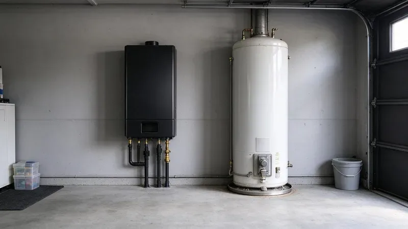

Two Ways to Heat Water
A tank heater keeps 40 to 80 gallons hot around the clock. Tankless heaters fire up when you open a faucet and shut off when you close it. Both can be gas or electric, both can serve a whole house, and the choice usually comes down to how your family uses hot water and what your gas line and water will support. Neither is the right answer everywhere.
The Tank Heater
Tanks are simple and cheap to replace. A standard 50-gallon gas tank swap is usually a same-day job. The tradeoff is standby loss, since the burner or elements cycle all day to keep stored water hot whether anyone is home or not, and the tank holds a fixed amount, so the fourth shower in a row runs cold. Most tanks last somewhere between 8 and 12 years.
Tanks also forgive a lot. A small gas line or some scale buildup rarely bothers them. If the power goes out, a gas tank with a standing pilot keeps making hot water, and the stored 50 gallons can even serve as an emergency supply drawn from the drain valve. That counts for something during a storm.
Newer homes across Arkansas mostly use PEX and PVC, which resist corrosion but still need proper support and freeze protection.
The Tankless Heater
Tankless heaters are rated by flow, in gallons per minute at a given temperature rise. The bigger gas models top out around 8 to 9 gallons a minute on mild incoming water. Colder incoming water means a bigger temperature rise, so the same unit delivers less flow in winter, and two showers plus a dishwasher can push a small unit past what it can keep up with. Sizing matters more than brand.
The upside is real. Endless hot water is the headline, as long as the unit is sized for your peak demand. Without standby loss, a gas tankless unit typically burns noticeably less fuel than a tank, it hangs on a wall instead of eating closet floor space, and a well-kept unit can run 20 years. Most of that life depends on the heat exchanger staying clean.
Maintenance looks different on each. Drain a few gallons from a tank every year to pull out the sediment. The anode rod, a sacrificial magnesium or aluminum rod that keeps the steel from rusting, should be checked every three to five years, and replacing a spent anode is one of the cheapest ways to get extra years out of a tank. On a tankless unit, the yearly job is descaling plus cleaning the inlet filter.
What Changes the Math in a Arkansas Home
Rural wells in Arkansas often carry iron, sediment, or a sulfur odor, which can stain fixtures and foul aerators and water heaters.
Installation is where tankless costs climb. Most whole-house gas units need a 3/4-inch gas line and stainless or PVC venting, depending on the model. Electric tankless models for a whole house can need 120 amps or more on dedicated breakers, which many older panels simply do not have room for, so a panel upgrade sometimes rides along with the job. We look at the panel and the gas meter first.
Hard water is the other big variable. Scale coats a tankless heat exchanger quickly and trips error codes. On hard water, plan to descale the unit every year with a small pump and a descaling solution circulated through the isolation valves, or put a softener ahead of it. A tank collects the same minerals as sediment on the bottom.
Big temperature swings between seasons expand and contract pipes and fittings, which can loosen older joints over time.
Family size and habits decide the rest. A couple in a small house rarely runs two showers at once. A family of five with teenagers and a soaking tub is a different load entirely, and that house needs either a large tankless unit sized for three fixtures at once or a bigger tank with a fast recovery rate. We ask how many showers run at the same time.
Code details matter on either type. Every tank gets a T&P relief valve with a discharge line run down to within a few inches of the floor or to a drain. Gas units of both kinds need proper combustion air and venting, and a tankless unit needs isolation valves so it can be flushed without cutting into the plumbing every year. Skipping those shows up on inspection.
Ask about recovery rate when comparing tanks. A gas tank reheats a full load much faster than an electric one. First-hour rating, printed on the yellow energy label, tells you how many gallons a tank delivers in the first hour of heavy use, and it is a better number to compare than tank size alone for a busy house. Heat pump water heaters sit in between, with lower running costs and slower recovery.
When to Call a Professional
A replacement is the cheapest time to switch. If your tank is over 10 years old or leaking at the bottom, get quotes on both before it fails. DGR Plumbing will look at your gas line, venting, panel and water hardness, then size a unit to your peak demand and show you the install cost side by side, which you can set up by calling (501) 251-9708. Both options need a permit in most places.
Need a licensed plumber in Arkansas?
DGR Plumbing answers 24/7 and offers same-day service across Arkansas.